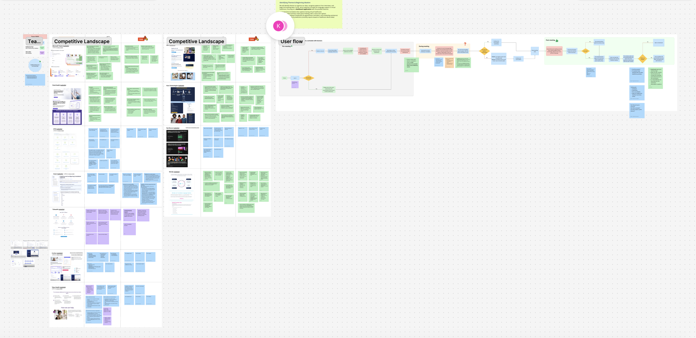

For newcomers who are not fluent in English or French, accessing healthcare involves more than finding an available doctor. Language differences can create difficulties when describing symptoms, understanding medical terminology, and following treatment recommendations.
These challenges also affect healthcare professionals, who need to communicate medical information accurately while ensuring patients understand their care.
Although medical interpreters and multilingual healthcare professionals can help address these barriers, they may not always be available, particularly in virtual healthcare settings.
"It would be unsafe to do medicine if neither of us understand each other."— Healthcare Provider
"Medical terminology is quite complicated... it's hard to understand what the doctors are saying." — Newcomer Patient
"How might we reduce language barriers in virtual healthcare to help newcomers communicate with healthcare professionals more confidently and understand their medical care?"
Researching Both Sides of the Healthcare Experience
To understand the challenges experienced by patients and healthcare professionals, our team used a mixed-method research approach that included interviews, online surveys, and secondary research.
We interviewed 10 participants, including:
- 6 healthcare professionals
- 4 newcomers to Canada
Our research focused on communication challenges, healthcare accessibility, and opportunities for AI-assisted tools to support virtual consultations.
We explored how the virtual healthcare experience could better support both user groups across three key stages.
01 — Before the Consultation
Newcomers may be unfamiliar with the Canadian healthcare system and uncertain about which specialist to consult.
Design opportunity: Provide symptom-based assistance and specialist recommendations to simplify the appointment-booking process.
02 — During the Consultation
Language differences and complex medical terminology can make it difficult for patients and healthcare providers to communicate accurately.
Design opportunity: Introduce real-time translated captions and terminology correction tools to support clearer communication.
03 — After the Consultation
Patients may struggle to understand medical summaries, prescriptions, and follow-up instructions, particularly when the information is presented in an unfamiliar language.
Design opportunity: Provide translated consultation summaries and accessible explanations of medical terminology.
Mapping the User Journey
We organized the platform around three connected user flows: pre-consultation, during consultation, and post-consultation.
The flows covered the patient's journey from symptom assistance and appointment booking to virtual consultation, summary review, and follow-up scheduling.
We also developed a separate healthcare provider flow focused on correcting translations, reviewing flagged terminology, editing consultation summaries, and approving medical information.
This helped us consider the needs of both user groups rather than designing solely from the patient's perspective.

Evaluating the Experience with Two User Groups
To evaluate the usability of our prototype, we conducted two rounds of usability testing through UserTesting.com.
We used the DECIDE framework to structure the evaluation and developed task-based testing scripts for newcomer patients and healthcare professionals.
The tests focused on navigation, feature clarity, task completion, and the overall consultation experience.
Round 1 — Identifying Usability Issues
Format
Tested newcomer and healthcare provider flows separately using task-based scenarios and think-aloud feedback.
Findings
- Newcomers found navigation intuitive but got stuck on the Flag feature — one tester completed the task but "wasn't sure of its purpose or functionality," and another couldn't tell the live caption apart from a transcript.
- Providers called the platform "very easy" and "well built," but the summary-generation step confused them — several expected to generate notes during the call, not after leaving it.
- One provider pushed on medical accuracy itself: she wanted a way to cross-check AI-suggested terminology against a clinical reference, not just trust it outright.
What We Changed
- Improved the visibility of the Flag feature and refined the meeting interface.
- Adjusted screen layouts and navigation to improve clarity.
- Combined both user flows into one test and translated the newcomer prototype into Mandarin for Round 2.
Round 2 — Validating Improvements
Format
Tested the refined prototype, including the Mandarin newcomer flow, using task-based scenarios and five-point ease-of-use ratings.
Findings
- The fixes worked — testers now completed the AI-matching and flagging tasks "quickly" and rated most steps "very easy."
- But it surfaced a new, more interesting gap: testers could flag a confusing term, but still didn't understand what the term meant once flagged. One tester explicitly wanted a hover-to-reveal definition rather than just a correction tool — a distinction we hadn't designed for in round 1.
- Providers still wanted a clearer way to edit summary notes directly — several expected a "click and type, like a Word doc" experience rather than a review-and-approve flow.
What We Changed
- Refined terminology correction interactions and explanations for flagged terms.
- Improved the clarity of summary-review and editing controls.
- Further refined high-fidelity wireframes and prototypes based on feedback.
Translating Research into an AI-Assisted Healthcare Experience

Based on our research and initial concepts, we developed a virtual healthcare dashboard with features supporting communication before, during, and after medical consultations.
01 Before Consultation — Helping patients find the right healthcare professional
We designed an AI assistant that allows patients to describe their symptoms and receive recommendations for appropriate medical specialists.
Patients can then review available providers and book a virtual appointment through the platform.
The goal was to reduce uncertainty when navigating an unfamiliar healthcare system and make the booking experience more straightforward.
02 During Consultation — Supporting clearer communication through real-time translation
During virtual consultations, patients and healthcare professionals can use AI-generated translated captions to communicate across language differences.
We also introduced terminology correction features to address inaccurate translations. Patients can flag unfamiliar or incorrectly translated words for healthcare professionals to review, while providers can correct terminology to improve communication clarity.
03 After Consultation — Making medical information easier to understand
Following a consultation, the platform generates summary notes for healthcare professionals to review, edit, and approve.
Once approved, the information can be translated into the patient's preferred language, allowing them to revisit treatment recommendations and medical instructions. Patients can also review unfamiliar terminology and schedule follow-up appointments.
Prototype — Newcomer
The newcomer-facing prototype walks through the full patient journey: AI symptom intake, specialist matching and booking, the live-translated call screen with the Flag feature, and the post-meeting summary with definitions and voice-over. This is the version we translated into Mandarin for round 2 testing.
Prototype — Provider Dashboard
The provider-facing prototype centers on the dashboard view: patient information pulled in ahead of the call, the live-caption and correction screen during the meeting, and the summary-review screen where providers edit notes, resolve flagged terms, and approve the prescription before it's translated and released to the patient.
Features
AI Bot Assistant
Takes in patient-reported symptoms, recommends the right specialist, books the earliest available appointment, and prepares a preliminary summary for the provider ahead of the call.
Real-Time AI Translation & Captioning
Live translated captions with automatic language detection, a medical-terminology engine that flags misspellings or unclear terms, and (after round 2 testing) a hover-to-reveal definition for any flagged word.
AI-Translated Dashboard & Post-Meeting Summary
Surfaces patient intake info, flagged terms, and an AI-drafted consultation summary for the provider to edit and approve. Once approved, it's auto-translated into the patient's preferred language, with a voice-over option.
This project challenged me to consider how AI-assisted technology can improve healthcare communication while balancing usability, accuracy, and the needs of different users.
- Designing for different user needs: I learned to balance the needs of newcomers and healthcare professionals, who have different expectations and responsibilities, while creating a consistent user experience.
- Looking beyond visual design: Usability testing showed me that an interface can look intuitive but still cause confusion. Feedback on the Flag feature and summary editing reinforced the importance of clear interactions and navigation.
- Balancing AI with human oversight: This project helped me recognize the importance of transparency and accuracy in AI-assisted healthcare, particularly when medical information needs to be reviewed and verified.
- Taking ownership of design decisions: Leading the design process strengthened my confidence in evaluating feedback, communicating with team members, and making decisions while balancing user needs and project limitations.
This experience strengthened my understanding of designing accessible, user-centred experiences while considering how technology can support people without replacing human judgment.